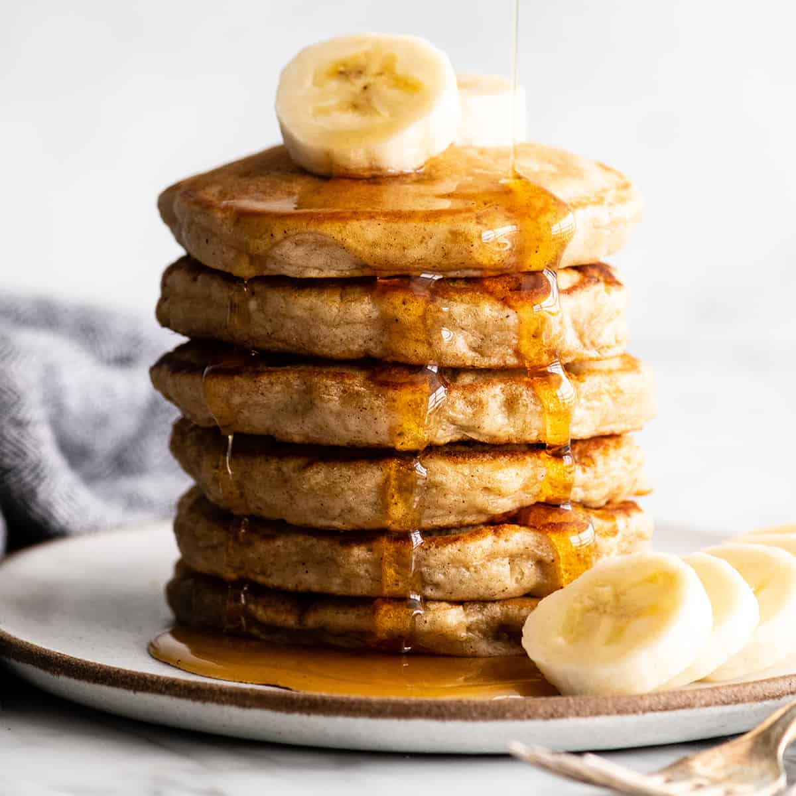

Banana Pancakes

Description
Time: 30 minutes
Yield: 12 pancakes
A tasty and healthy pancake recipe perfect for brunch or dessert.
Ingredients
- 2 very ripe bananas, mashed
- 1 large egg
- 1/2 cup whole milk
- 1/2 cup whole greek yogurt, plain
- 1 tsp vanilla extract
- 1 cup all-purpose flour
- 2 tsp baking powder
- 1 Tbsp brown sugar
- 1/4 tsp salt
- 1/2 tsp ground cinnamon
- 1 Tbsp canola, or other neutral oil
Instructions
- In a medium size bowl, mix together dry ingredients.
- In large bowl, beat egg, then add remaining ingredients.
- While mixing, slowly add dry ingredients to large bowl until just combined
- Heat oil in pan over medium-high heat until shimmering. Add ~1/3 cup batter to pan. When bubbles in batter pop and remain open, flip pancake (~2min). Cook other side until golden brown.
- Repeat step 4 with remaining batter. Pancakes can be kept warm on a heated plate with a towel draped over them. Serve with your favorite toppings such as banana slices, chocolate, or chopped nuts like pecans or walnuts.